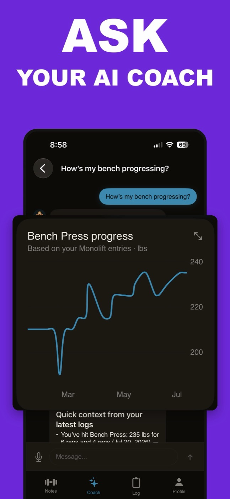
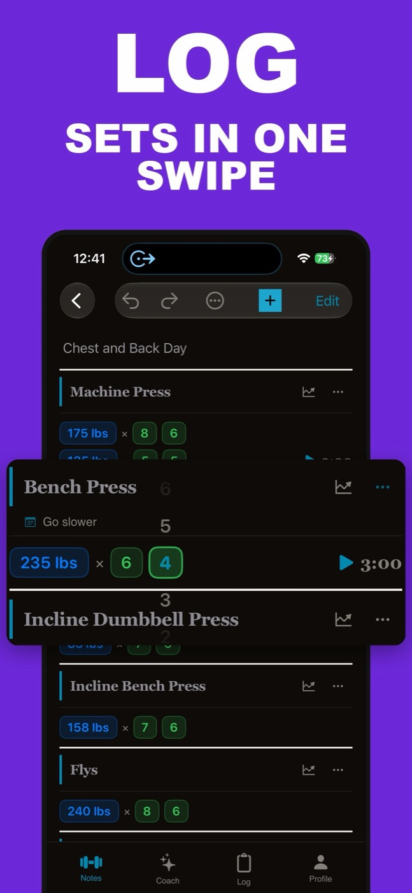

AI Fitness Coach vs ChatGPT: Which Should Program Your Training?
If you're weighing an AI fitness coach vs ChatGPT, you've probably already noticed that ChatGPT is decent at this. Ask it for a four-day upper/lower split and it hands you one in ten seconds, with sensible exercise selection and a paragraph about progressive overload. So the real question isn't whether ChatGPT can talk about training — it can — but whether a dedicated coach inside a workout app does anything a free chatbot doesn't.
Short answer: ChatGPT writes a competent starter program and answers general form and nutrition questions well. Its structural gap is that it never sees your training log — every conversation starts from zero, and "how's my bench going?" gets a guess. A dedicated AI fitness coach built into a tracker reads your actual sets, so it can build sessions from your history, flag plateaus, and suggest deloads. Use ChatGPT for one-off questions; use a log-connected coach for week-to-week programming.
What ChatGPT gets right as a personal trainer
Credit where it's due. For a beginner who has never touched a barbell, a ChatGPT workout plan is genuinely useful. It knows the standard templates — full-body three days a week, upper/lower, push/pull/legs — and it will adapt them to your equipment, your schedule, and a dodgy shoulder if you mention one. It explains RPE, answers "should my knees go past my toes" without judgment, and it's available at 2 a.m. when no human coach is.
It's also cheap. As of mid-2026, ChatGPT has a free tier with usage limits and paid plans that raise them, which means the marginal cost of asking one more training question is zero. If all you want is a sane starting program and someone patient to explain the basics, ChatGPT as a personal trainer is a legitimate answer, and anyone selling against it should say so plainly.
Some lifters go further and run their whole program through it: paste the week's numbers into a chat every Sunday, ask for analysis, adjust. That works. It's just manual — and that's the seam where the whole comparison splits open.
Where a ChatGPT workout plan falls apart
A generic chatbot has no connection to what you actually did in the gym. It wrote you a program, but it never finds out whether you followed it, missed reps, or stalled for three weeks. Every conversation starts from roughly zero.
As of mid-2026, ChatGPT's memory does carry facts and preferences across conversations — it can remember that you squat twice a week or that your shoulder is cranky. What it doesn't hold is a structured, set-by-set log. So when you ask "how's my bench going?", you get one of two things: a request to paste your numbers in, or a confident guess dressed up as analysis.
That makes you the data pipeline. To get real feedback you have to retype or paste something like this into the chat, every time:
Bench Press: 185 lbs 8, 8, 6
Incline DB Press: 65 lbs 10, 9, 8
Cable Fly: 42.5 lbs 12, 12, 12
— repeated for the last three weeks of sessions
Most people do that twice and then stop. And the moment you stop feeding it data, ChatGPT's advice degrades back to generic — the same template it would give anyone with your bodyweight and goals. The plan was fine; the feedback loop is what's missing. If you're still deciding how to keep that data in the first place, our guide on how to track workouts covers the options from paper to apps.
There's a second, smaller friction: ChatGPT's output lives in a chat window. You still have to move the plan into wherever you log — Notes, a spreadsheet, a tracker — and move results back. The chatbot and the logbook are two different tools, and you're the glue between them.
What a log-connected AI coach does differently
A dedicated AI fitness coach lives inside the app where your sets already are. That one architectural difference changes what it can honestly claim to do:
- It answers from your data, not a guess. "How's my bench going?" gets your actual numbers over the actual weeks, because the coach can read the log.
- It writes programs into your log, not into a chat bubble. Ask for tomorrow's session and it drafts one based on your history and saves it where you'll log it — no copy-paste step.
- It watches for patterns you'd miss. Three weeks at the same weight and reps is a plateau; a coach with the log can flag it and suggest a deload. (If you're not sure what those signs look like, see when to deload.)
- Logging can happen in the chat. Telling a coach "log 82 kg bodyweight" or describing a meal only works if the coach has somewhere to write it.

Two honest caveats. First, a specialist coach is narrower: ChatGPT will also draft your emails and plan your holiday, and a gym coach won't. Second, any nutrition or cardio numbers an AI gives you — Monolift's included — are estimates, not lab measurements. Treat them as a fast starting point, not gospel.
AI fitness coach vs ChatGPT: side by side
| ChatGPT | Log-connected coach (e.g. Monolift) | |
|---|---|---|
| Write a starter program | Good | Good — and built from your history once you have one |
| Answer general form / nutrition questions | Good | Good, grounded in your data where relevant |
| Knows your actual sets and reps | Only what you paste in each time | Reads every logged set |
| "How's my bench going?" | Asks for numbers, or guesses | Answers from your log |
| Puts the workout where you log | No — copy-paste it yourself | Saves to your notes after you approve |
| Flags plateaus, suggests deloads | Only if you feed it the data | Yes, from your history |
| Log food or body weight by chat | No log to write to | Yes (estimates for calories/macros) |
| Scope beyond the gym | Everything | Training, nutrition, body weight — that's it |
| Cost | Free tier with limits; paid plans raise them (as of mid-2026) | Part of the app subscription; free 7-day trial with full access |
Is an AI workout coach worth it?
Only if you log your training. That's the whole answer, and it cuts both ways.
An AI coach is an analysis layer on top of your data. If there's no data — if you train from memory and never write anything down — a dedicated coach has nothing to read, and its advice collapses to the same generic output ChatGPT gives you for free. In that case, don't pay for a coach; start logging first and see how to track workouts without making it a chore.
If you already log — in an app, a spreadsheet, or an Apple Notes workout template — a log-connected coach is worth a trial when at least one of these is true: you've stalled on a lift and can't see why, you never deload because nothing tells you to, or you keep meaning to analyze your progressive overload and never do. Those are exactly the jobs a coach with your log does passively, while you just train.
It's not worth it if a human coach already programs for you, or if you genuinely enjoy the Sunday ritual of pasting your week into ChatGPT — that loop works, it just doesn't run itself.
A test you can run this week
Ask both the same question: "How has my squat moved over the last six weeks, and should I deload?" ChatGPT will ask you to supply the numbers. A coach that reads your log answers with them. That single exchange is the entire difference between the two, and it costs nothing to run — Monolift's trial includes the full coach for 7 days.

One more honest note: Monolift is iPhone-only and English-only, so if you train on Android, ChatGPT plus a spreadsheet remains a reasonable setup. And if you're comparing trackers more broadly before committing to any of this, start with our roundup of the best workout tracker apps for iPhone.
If you're already asking ChatGPT training questions, the missing piece is a coach that can actually read your log — try one on your own training for a week.
Download on theApp StoreFree 7-day trial · iPhone · iOS 17+